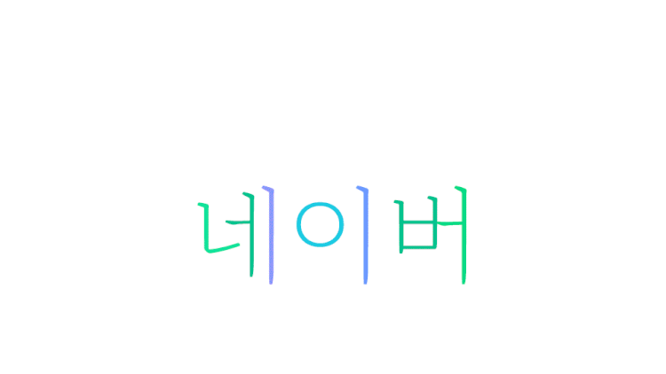

window.open()으로 윈도우 열기
엘비스 프레슬리 홈 페이지
유니버설 올랜드 홈 페이지
디즈니월드 홈 페이지
Close
이미지에 마우스를 올리고 5초간 그대로 있을 때 사이트로 이동합니다

텍스트가 자동 회전하며, 마우스로 클릭하면 중단합니다.
자동 회전하는 텍스트입니다.
새 창 열기 및 제어
자동 스크롤 페이지
꿈길(이동순)
꿈길에
발자취가 있다면
님의 집 창밖
그 돌계단 길이 이미 오래 전에
모래가 되고 말았을 거예요
하지만
그 꿈길에서 자취 없다 하니
나는 그것이 정말 서러워요
이 밤도
나는 님의 집 창밖
그 돌계단 위에 홀로 서서
혹시라도 님의 목소리가 들려올까
고개 숙이고 엿들어요
onbeforeprint, onafterprint 이벤트 예
안녕하세요. 브라우저 윈도우에서는 보이지 않지만, 프린트시에는 회사 로고가 출력되는 예제를
보입니다. 마우스 오른쪽 버튼을 눌러 인쇄 미리보기 메뉴를 선택해 보세요.